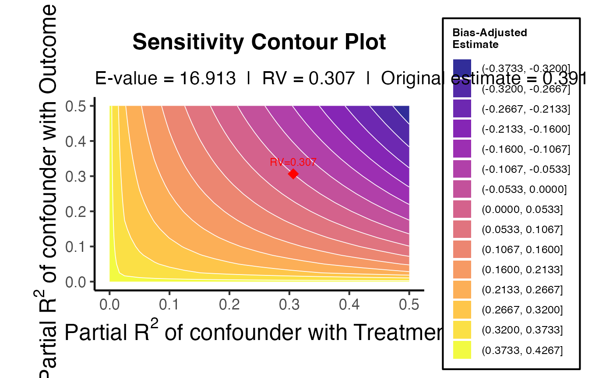

Sensitivity Analysis for Omitted Variable Bias (E-value & RV)
confounding_strength.RdImplements the E-value of VanderWeele & Ding (2017) and the robustness value / bias formula of Cinelli & Hazlett (2020) to quantify how much unmeasured confounding would be needed to explain away a causal estimate.
Usage
confounding_strength(
estimate,
se,
df = Inf,
benchmark_covariates = NULL,
data = NULL,
outcome = NULL,
treatment = NULL,
alpha = 0.05
)Arguments
- estimate
Numeric. The point estimate of the causal effect (from any model).
- se
Numeric. The standard error of the estimate.
- df
Numeric. Residual degrees of freedom. Use
Inffor large samples. DefaultInf.- benchmark_covariates
Character vector or
NULL. Names of observed covariates to use as benchmarks (requiresdata,outcome, andtreatment). Optional.- data
Data frame or
NULL. Required whenbenchmark_covariatesis specified.- outcome
Character or
NULL. Outcome variable name indata.- treatment
Character or
NULL. Treatment variable name indata.- alpha
Numeric. Significance level for the CI-based E-value. Default
0.05.
Value
A named list:
e_valueNamed numeric:
e_value(for the point estimate) ande_value_ci(for the confidence limit closer to the null).robustness_valueNamed numeric:
rv_q0(to explain away the point estimate) andrv_qa(to explain away the CI bound).sensitivity_dfData frame of bias-adjusted estimates across a grid of
r2dz(0–0.5) ×r2yz(0–0.5) partial R² values.plotA ggplot2 contour plot showing the sensitivity surface.
Details
Sensitivity Analysis for Omitted Variable Bias
Computes sensitivity measures for assessing robustness of a causal estimate to unobserved confounding:
E-value (VanderWeele & Ding 2017): the minimum strength of association (on a risk-ratio scale) that an unmeasured confounder would need with both the treatment and the outcome to fully explain away the observed effect.
Robustness value (Cinelli & Hazlett 2020): the minimum partial R² that the confounder would need to explain in both the treatment and the outcome to drive the estimate to zero (or the null).
Bias-adjusted contour plot: estimated effect across a grid of partial R² values for the confounder's association with treatment (r²[dz|x]) and outcome (r²[yz|x]).
No dependency on sensemakr is required; all computations use base R.
References
VanderWeele, T. J., & Ding, P. (2017). Sensitivity analysis in observational research: Introducing the E-value. Annals of Internal Medicine, 167(4), 268-274.
Cinelli, C., & Hazlett, C. (2020). Making sense of sensitivity: Extending omitted variable bias. Journal of the Royal Statistical Society: Series B, 82(1), 39-67.
Examples
# Simulated linear regression
set.seed(42)
n <- 500
x <- rnorm(n)
y <- 0.4 * x + rnorm(n)
m <- lm(y ~ x)
sm <- summary(m)
est <- coef(m)["x"]
se <- coef(sm)["x", "Std. Error"]
df_r <- m$df.residual
sens <- confounding_strength(estimate = est, se = se, df = df_r)
print(sens$e_value)
#> e_value.x e_value_ci.x
#> 16.91304 12.97937
print(sens$robustness_value)
#> rv_q0.x rv_qa
#> 0.30650970 0.08425162
sens$plot
